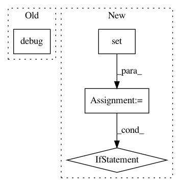

91d4af0d59877cdc19b76854f3c90ed0341a367e,src/python/pants/backend/python/subsystems/pex_build_util.py,PexBuilderWrapper,add_resolved_requirements,#PexBuilderWrapper#Any#Any#,202
Before Change
for resolved_dist in self.resolve_distributions(reqs, platforms=platforms):
requirement = resolved_dist.requirement
self._log.debug(f" Dumping requirement: {requirement}")
self._builder.add_requirement(str(requirement))
distribution = resolved_dist.distribution
self._log.debug(f" Dumping distribution: .../{os.path.basename(distribution.location)}")
After Change
Defaults to the platforms specified by PythonSetup.
distributions = self._resolve_distributions_by_platform(reqs, platforms=platforms)
locations = set()
for platform, dists in distributions.items():
for dist in dists:
if dist.location not in locations:
self._log.debug(f" Dumping distribution: .../{os.path.basename(dist.location)}")
self.add_distribution(dist)
locations.add(dist.location)
def _resolve_multi(self, interpreter, requirements, platforms, find_links):
Multi-platform dependency resolution for PEX files.
In pattern: SUPERPATTERN
Frequency: 3
Non-data size: 4
Instances
Project Name: pantsbuild/pants
Commit Name: 91d4af0d59877cdc19b76854f3c90ed0341a367e
Time: 2019-12-10
Author: john.sirois@gmail.com
File Name: src/python/pants/backend/python/subsystems/pex_build_util.py
Class Name: PexBuilderWrapper
Method Name: add_resolved_requirements
Project Name: Microsoft/nni
Commit Name: 7ee5036b2858c2b18bf113d56059ae6d30656113
Time: 2020-06-10
Author: 49771382+zheng-ningxin@users.noreply.github.com
File Name: src/sdk/pynni/nni/_graph_utils.py
Class Name: TorchModuleGraph
Method Name: _build_graph
Project Name: senarvi/theanolm
Commit Name: 7380900edb073add959fc9cf4b67f93f0dc7a5c8
Time: 2017-11-08
Author: seppo.git@marjaniemi.com
File Name: theanolm/scoring/rescoredlattice.py
Class Name: RescoredLattice
Method Name: __init__